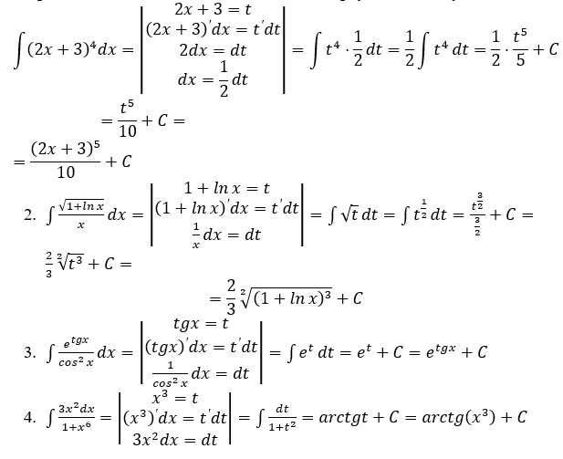
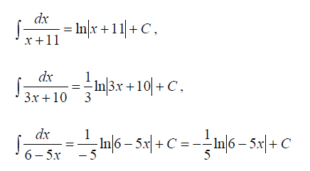

Поняття первісної та невизначеного інтеграла. Основні властивості невизначеного інтеграла.
У диференціальному обчисленні основною задачею є задача визначення похідної функції, а в інтегральному обчисленні вирішується обернена задача: відшукання функції за заданою похідною.
Прийнято функцію F(x) називати первісною для функції f(x) на (a;b), якщо для будь-якого х, яке належить інтервалу (a;b) для \(\forall x\in\left(a;b\right)\), \(F^\prime\left(x\right)=f\left(x\right)\).
Сукупність усіх первісних функцій \(F\left(x\right)+C\) для функції f(x) на деякому інтервалі називається інтегралом від функції f(x) й позначається
\(\int{f\left(x\right)dx=F\left(x\right)+C}\),
де С – будь-яка стала.
Відомо, що будь-яка неперервна на деякому інтервалі функція має на цьому інтервалі первісну.
Основні властивості невизначеного інтеграла:
Таблиця інтегралів
Основні методи інтегрування
- Безпосереднє інтегрування
Обчислення невизначених інтегралів за допомогою безпосереднього використання таблиці інтегралів та основних властивостей невизначених інтегралів називається безпосереднім інтегруванням.
Приклад 1.
- \(\int{\left(2e^x+7-\frac{x^3}{3}+\frac{4}{x}\right)dx}=2\int{e^xdx}+7\int{dx}-\frac{1}{3}\int{x^3dx}+4\int{\frac{1}{x}dx}=2e^x+7x-\frac{1}{3}\cdot \frac{x^3}{9}+4ln|x|+C=2e^x+7x-\frac{x^3}{9}+4ln|x|+C\);
- \(\int{ctg^2xdx=\int{\left(\frac{1}{{sin}^2{x}}-1\right)dx=\int{\frac{dx}{{sin}^2{x}}-\int{dx=-ctgx-x+C}}}}\)
- Інтегрування шляхом внесення під знак диференціала
Якщо \(\int{f\left(x\right)dx=F\left(x\right)+C}\), і \(u=u\left(x\right)\) - будь-яка диференційована за змінною х функція, то \(\int{f\left(u\right)du=F\left(u\right)+C}\). Зокрема, \(\int{f\left(ax+b\right)dx=\frac{1}{a}F\left(ax+b\right)+C}\), де a, b – дійсні числа, а ≠ 0.
Приклад 2.
- Користуючись формулами \(\int{e^xdx=e^x+C}\) та \(\int{f\left(ax+b\right)dx=\frac{1}{a}F\left(ax+b\right)+C}\), знайдемо
- Метод заміни змінної у невизначеному інтегралі
Нехай на деякому проміжку визначена складена функція \(f\left(\varphi\left(t\right)\right)\) і функція \(x=\varphi\left(t\right)\) - монотонна функція, яка має неперервну похідну \(\varphi^\prime\left(t\right)\), тоді \(\int{f\left(x\right)dx=\int{f\left(\varphi\left(t\right)\right)\cdot\varphi^\prime\left(t\right)dt}}\).
Ця рівність називається формулою заміни змінної у невизначеному інтегралі.
Приклади. Знайти інтеграл:
- \(\int{\left(2x+3\right)^4dx}\).
Метод заміни змінної полягає в тому, щоб заданий інтеграл звести до табличного, ввівши нову змінну (наприклад, \(t\)).
Виконаємо підстановку \(2х+3=t\), тоді диференціюючи обидві частини рівності отримаємо: \(\left(2х+3\right)^\prime dx=t'dt\), \(2dx=dt\), \(dx=\frac{1}{2}dt\). Підставивши отримані вирази в заданий інтеграл, отримаємо: \(\int{t^4\cdot\frac{1}{2}dt}\). Якщо винести числовий множник за знак інтеграла, то отримаємо інтеграл подібний до такого табличного: \(\int{x^ndx=\frac{x^{n+1}}{n+1}+C},n\neq-1\). І за допомогою цього інтеграла знайдемо заданий. В зошиті всі ці міркування записують так:

